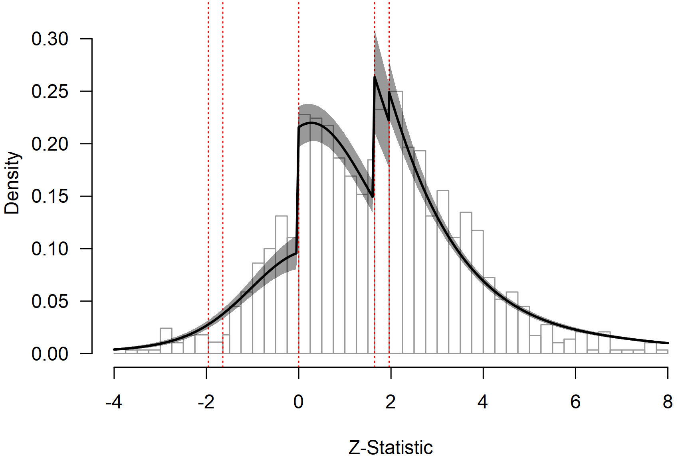

Multilevel Robust Bayesian Model-Averaged Meta-Regression
František Bartoš
17th of December 2025 (updated: 29th of April 2026)
Source:vignettes/v33-robma-multilevel-metaregression.Rmd
v33-robma-multilevel-metaregression.RmdThis vignette accompanies the manuscript Robust Bayesian Multilevel Meta-Analysis: Adjusting for Publication Bias in the Presence of Dependent Effect Sizes preprinted at PsyArXiv (Bartoš et al., 2026).
This vignette reproduces the second example from the manuscript, re-analyzing data from Havránková et al. (2025) on the relationship between beauty and professional success (1,159 effect sizes from 67 studies). We investigate whether the effect depends on the type of customer contact (“no”, “some”, or “direct”). For the first example describing a publication-bias-adjusted multilevel meta-analysis, see the Multilevel Robust Bayesian Meta-Analysis vignette.
Rescaling Prior Distributions for Non-Standardized Effect Sizes
The effect sizes in this dataset are not standardized: they are
percent increases in earnings associated with a one-standard-deviation
increase in beauty. Therefore, the prior distributions need to be
defined on this outcome scale. Overly narrow prior distributions would
make it difficult to find evidence for the effect because both models
would predict effects very close to zero. Overly wide prior
distributions would bias the results towards the null hypothesis because
alternative models would predict unrealistically large effects. The 4.0
version of the RoBMA R package handles this automatically
by estimating the unit-information standard deviation (UISD) and
rescaling the prior distributions appropriately (see the Prior Distributions
vignette).
To reproduce the RoBMA 3.6.1 version results that used different prior distribution formulation and scaling settings we need to specify the prior distributions manually.1
prior_effect_361 <- prior("normal", list(mean = 0, sd = 25.8))
prior_heterogeneity_361 <- prior("invgamma", list(shape = 1, scale = 0.15 * 25.8))
prior_mods_361 <- list(
facing_customer = prior_factor("mnormal", list(mean = 0, sd = 0.25 * 25.8), contrast = "meandif")
)
prior_bias_361 <- list(
prior_weightfunction("two-sided", c(0.05), wf_cumulative(c(1, 1)), prior_weights = 1/12),
prior_weightfunction("two-sided", c(0.05, 0.10), wf_cumulative(c(1, 1, 1)), prior_weights = 1/12),
prior_weightfunction("one-sided", c(0.05), wf_cumulative(c(1, 1)), prior_weights = 1/12),
prior_weightfunction("one-sided", c(0.025, 0.05), wf_cumulative(c(1, 1, 1)), prior_weights = 1/12),
prior_weightfunction("one-sided", c(0.05, 0.5), wf_cumulative(c(1, 1, 1)), prior_weights = 1/12),
prior_weightfunction("one-sided", c(0.025, 0.05, 0.5), wf_cumulative(c(1, 1, 1, 1)), prior_weights = 1/12),
prior_PET("Cauchy", list(0, 1), list(0, Inf), 1/4),
prior_PEESE("Cauchy", list(0, 5 / 25.8), list(0, Inf), 1/4)
)We fit the robust Bayesian multilevel meta-regression using the
RoBMA() function. We specify the effect sizes via
yi, standard errors via sei, and the
effect-size scale via the measure = "GEN" argument. The
moderator facing_customer is specified via the formula
syntax using the mods argument. The multilevel structure,
i.e., effect sizes nested within studies study_id, is
specified using the cluster argument. Finally, we specify
the RoBMA 3.6.1 equivalent prior distributions in the
prior_* arguments (omitting them would result in a model
fit using the current default prior distributions based on the
UISD).
fit_reg <- RoBMA(
yi = y, sei = se, measure = "GEN",
mods = ~ facing_customer,
cluster = study_id,
prior_effect = prior_effect_361,
prior_heterogeneity = prior_heterogeneity_361,
prior_mods = prior_mods_361,
prior_bias = prior_bias_361,
sample = 20000, burnin = 10000, adapt = 10000,
thin = 5, parallel = TRUE, seed = 1,
data = Havrankova2025
)The meta-regression can take more than an hour to run with parallel processing enabled.
Interpreting the Results
The summary() function reports inclusion Bayes factors
and model parameters.
summary(fit_reg, include_mcmc_diagnostics = FALSE)
#>
#> Robust Bayesian Model-Averaged Multilevel Mixed-Effect Model (k = 1159, clusters = 67)
#>
#> Component Inclusion
#> Prior prob. Post. prob. Inclusion BF
#> Effect 0.500 1.000 >59999.000
#> Heterogeneity 0.500 1.000 >59999.000
#> Publication Bias 0.500 1.000 >59999.000
#>
#> Meta-Regression Inclusion
#> Prior prob. Post. prob. Inclusion BF
#> facing_customer 0.500 1.000 >59999.000
#>
#> Common Estimates
#> Mean SD 0.025 0.5 0.975
#> tau 4.525 0.380 3.863 4.495 5.344
#> rho 0.819 0.033 0.748 0.821 0.879
#>
#> Meta-Regression
#> Mean SD 0.025 0.5 0.975
#> intercept 3.030 0.556 1.941 3.027 4.123
#> facing_customer[dif: No] -2.224 0.435 -3.083 -2.222 -1.384
#> facing_customer[dif: Some] 1.010 0.514 0.000 1.006 2.008
#> facing_customer[dif: Direct] 1.214 0.407 0.420 1.211 2.015
#>
#> Publication Bias
#> Mean SD 0.025 0.5 0.975
#> omega[0,0.025] 1.000 0.000 1.000 1.000 1.000
#> omega[0.025,0.05] 0.891 0.107 0.669 0.905 1.000
#> omega[0.05,0.5] 0.494 0.054 0.395 0.492 0.606
#> omega[0.5,0.95] 0.222 0.038 0.156 0.219 0.305
#> omega[0.95,0.975] 0.222 0.038 0.156 0.219 0.305
#> omega[0.975,1] 0.222 0.038 0.156 0.219 0.305
#> PET 0.000 0.000 0.000 0.000 0.000
#> PEESE 0.000 0.000 0.000 0.000 0.000
#> P-value intervals for publication bias weights omega correspond to one-sided p-values.The effect-size estimates are obtained with dedicated helpers:
pooled_effect() for the average effect and
marginal_means() for the moderator levels.
The multilevel RoBMA meta-regression finds extreme evidence for the presence of the average effect, moderation by the degree of consumer contact, between-study heterogeneity, and publication bias (all BFs > 10,000).
pooled_effect(fit_reg)
#>
#> Pooled Effect Size
#> Mean Median 0.025 0.975
#> mu 3.230 3.227 2.146 4.319The model-averaged effect estimate is accompanied by considerable
overall heterogeneity and a cluster-level allocation close to 1,
indicating a high degree of similarity among estimates from the same
study. MCMC diagnostics are included in summary() by
default, and chain-level checks are available via
plot_diagnostic_trace(),
plot_diagnostic_density(), and
plot_diagnostic_autocorrelation().
The average effect is moderated by the degree of consumer contact. To examine the effect at each level of the moderator, we use the estimated marginal means.
mm_reg <- marginal_means(fit_reg)
summary(mm_reg)
#>
#> Model-Averaged Marginal Means:
#> Mean SD 0.025 0.5 0.975 Inclusion BF
#> intercept 3.030 0.556 1.941 3.027 4.123 Inf
#> facing_customer[No] 0.805 0.712 -0.606 0.807 2.199 0.108
#> facing_customer[Some] 4.040 0.792 2.494 4.037 5.589 Inf
#> facing_customer[Direct] 4.244 0.643 2.992 4.240 5.515 Inf
#> mu_intercept: Posterior samples do not span both sides of the null hypothesis. The Savage-Dickey density ratio is likely to be overestimated.
#> mu_facing_customer[Some]: Posterior samples do not span both sides of the null hypothesis. The Savage-Dickey density ratio is likely to be overestimated.
#> mu_facing_customer[Direct]: Posterior samples do not span both sides of the null hypothesis. The Savage-Dickey density ratio is likely to be overestimated.The estimated marginal means reveal moderate evidence for the absence of an effect for jobs with no consumer contact and extreme evidence for an effect for jobs with some or direct consumer contact.
Visual Fit Assessment
We visualize model fit using the meta-analytic zplot (Bartoš & Schimmack, 2025); see the Zplot Publication-Bias Diagnostics vignette for more details. The zplot shows the distribution of the observed -statistics, computed as the effect size divided by the standard error, with dotted red horizontal lines highlighting the typical steps on which publication bias operates. These are and , corresponding to marginally significant and statistically significant -values, and , corresponding to selection on the direction of the effect.
par(mar = c(4, 4, 0, 0))
zplot(fit_reg, by.hist = 0.25, plot_extrapolation = FALSE, from = -4, to = 8)
We can notice clear discontinuities corresponding to selection on the direction of the effect and marginal significance. The posterior predictive density from the multilevel RoBMA meta-regression indicates that the model approximates the observed data reasonably well, capturing the discontinuities and the proportion of statistically significant results. This supports the model fit even after adjusting for publication bias.